INTERACTIVE ARTS 1: FALL '15
- Instructor: Sam Sheffield (ssheffield@mica.edu)
- This Site (Short URL): tiny.cc/ia1f15
- Online syllabus: ia1syllabus.pdf
- Code repository: github.com
09/08: CODE + ART
DETAILS
Welcome everyone!
- Share homework.
- Historical Computer Art + Early Generative Art
- Processing 2: Conditional logic, movement, & variables
HOMEWORK
Let's take a quick look at everyone's drawings
- Run your sketch on your computer.
- Use Sketch -> Present to hide the computer background.
- Make sure to upload it to your class Drive folder (link sent out this past weekend).
GENERATIVE ART
Generative Art refers to art which has been created, either in whole or in part, with the use of an autonomous, random, or rule-driven system.
- Jim Campbell's Formula for Computer Art
SYSTEMS + ART
First, some examples of non-computational work by artists...
JASPER JOHNS
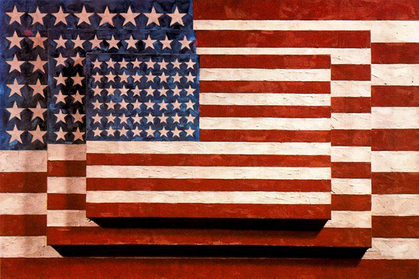Three Flags, 1958 by Jasper Johns
JASPER JOHNS' RULES FOR MAKING
"It's simple, you just take something and do something to it, and then do something else to it. Keep doing this, and pretty soon you've got something"
—Jasper Johns
YEARS LATER, SOMEONE ELSE DID SOMETHING ELSE TO IT!

Enduring Freedom, 2008 by Ramsay Stirling
JOHN CAGE'S PREPARED PIANO (1940s-)
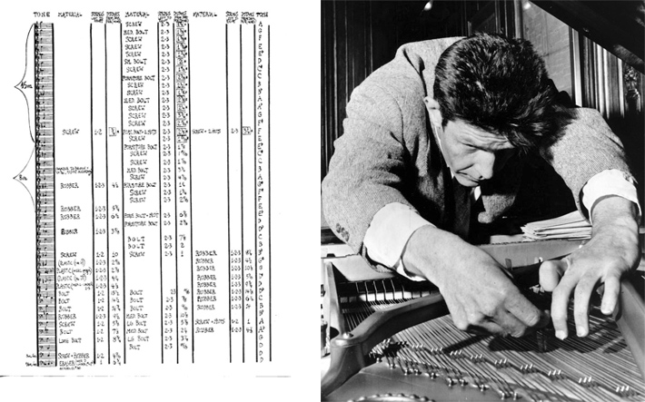A prepared piano has its sound altered by placing objects between a piano's strings and hammers. Cage is often credited with this discovery, though there have been a number of variations on this technique since the 18th century!
JEAN TINGUELY'S MACHINES
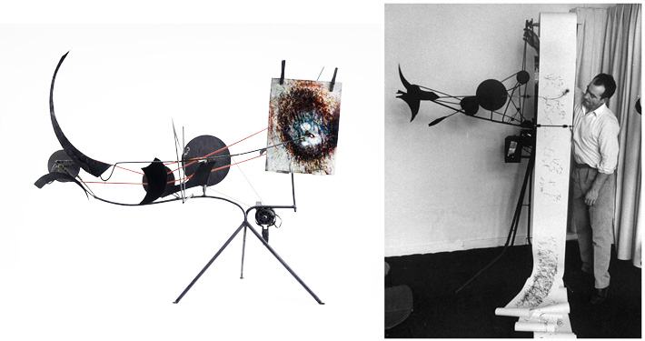Metamatics from the 1950s by Jean Tinguely
Homage to New York performance at MOMA, 1960 by Jean Tinguely
SOL LEWITT
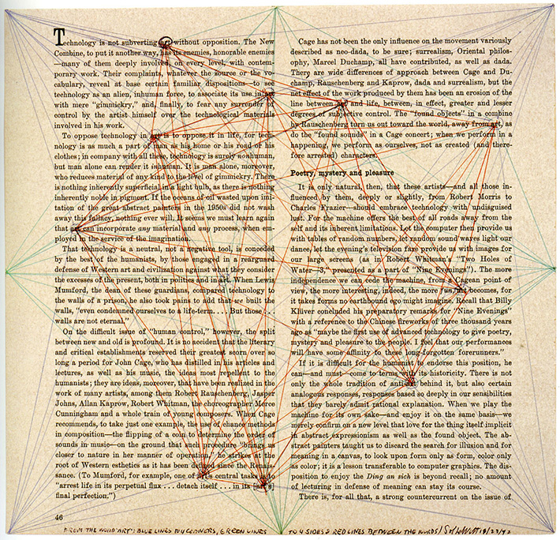From The Word(s) ‘Art’; Blue Lines To Four Corners, Green Lines To Four Sides, And Red Lines Between The Words, 1972 by Sol Lewitt
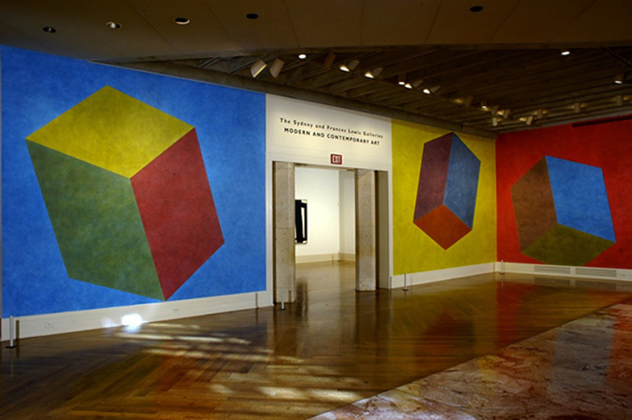Wall Drawing 541, 2000 by Sol Lewitt
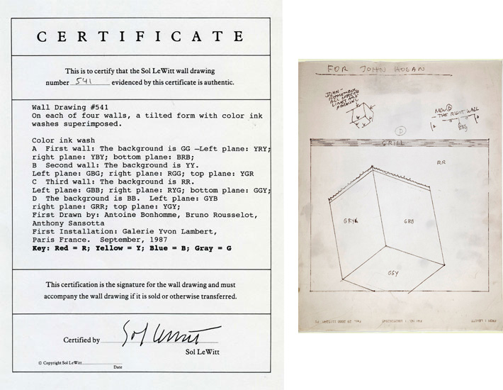Wall Drawing 541 instructional documents
CASEY REAS' INTERPRETATIONS OF LEWITT'S WALL DRAWINGS
In 2004, Whitney commissioned interpretations of Lewitt's wall drawings in code for the {Software} Structures online exhibition. Requires Java plugin to view online, but the code can still be run in Processing. More here
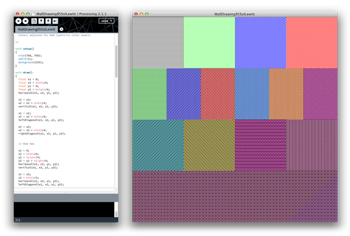Drawing 85 (after Sol Lewitt), 2004 by Casey Reas
YOKO ONO'S INSTRUCTIONAL FLUXUS WORK
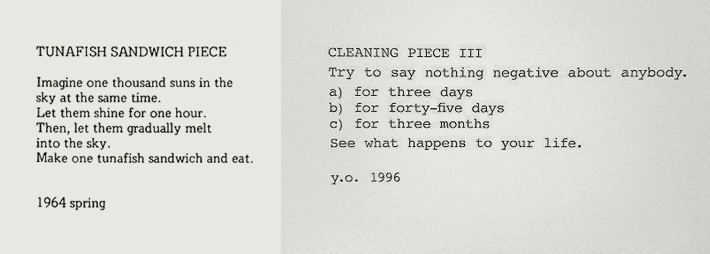Two instructional pieces by Yoko Ono.
COMPUTER AS DRAWING TOOL/MACHINE: EARLY COMPUTER ART
Origins of generative/computational art
PRE-COMPUTATIONAL GENERATIVE ART: BEN LAPOSKY'S OSCILLONS
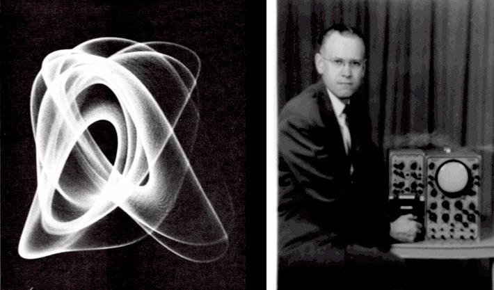 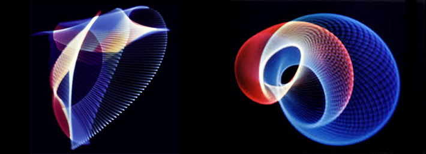Oscillon series, early 1950s by Ben Laposky
A POINT OF REFERENCE
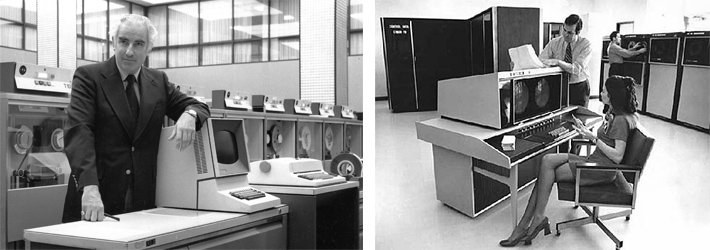State of computing in the 1960s
IVAN SUTHERLAND'S SKETCHPAD, 1961
Sutherland's Sketchpad was a precursor to all modern interactive computer graphics systems.
CHARLES CSURI
Hummingbird, 1968
Interactive Art Objects, 1968
"THE 3 N'S" ALGORISTS GROUP (GEORG NEES, FRIEDER NAKE, AND A. MICHAEL NOLL)
Algorithm: A process or set of rules to be followed in calculations or other problem-solving operations, especially by a computer.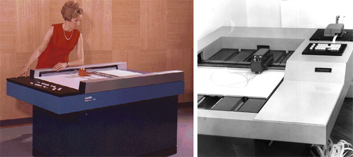
Zuse Graphomat Z64
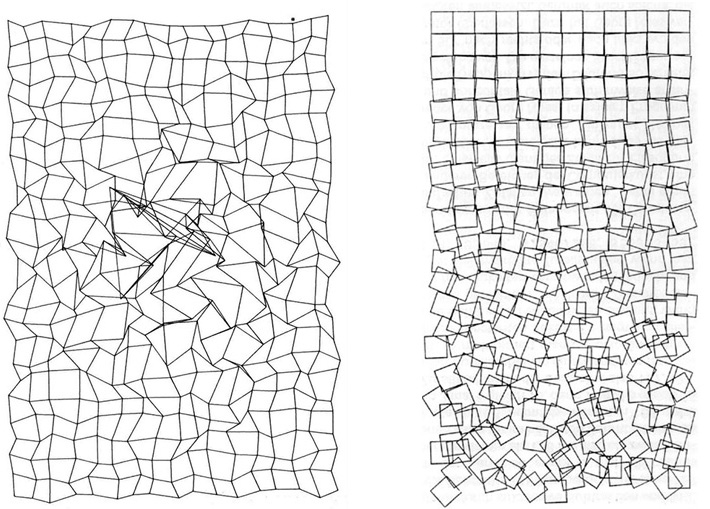Untitled, 1965-1968 and Schotter, 1968 by Georg Nees
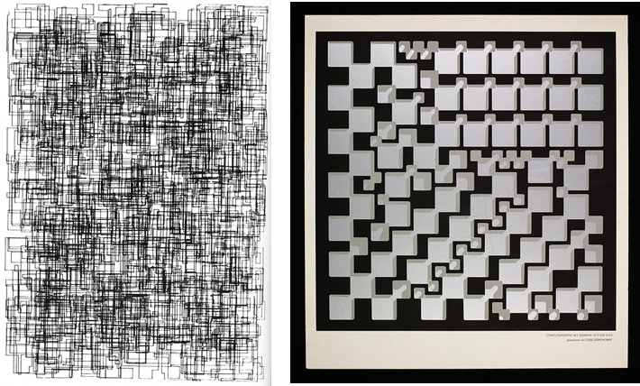Untitled (Micro Innovations), 1967 and Sculpture, 1968 by Georg Nees
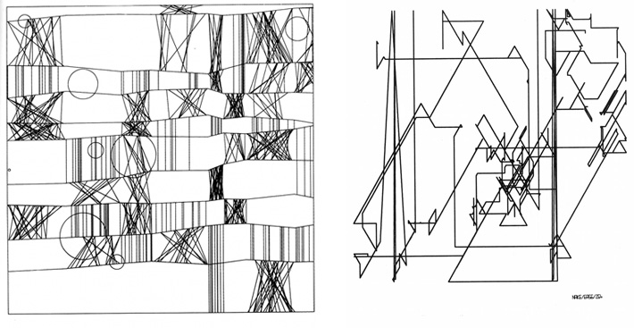NR. 2 ("Klee"), 1965 and Polygon Course No. 7, 1965 by Frieder Nake
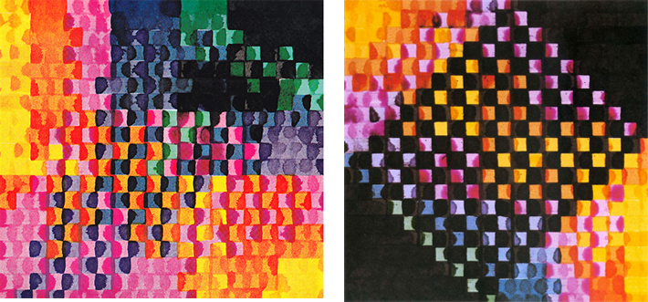Matrix Multiplication Series, 1967 by Frieder Nake
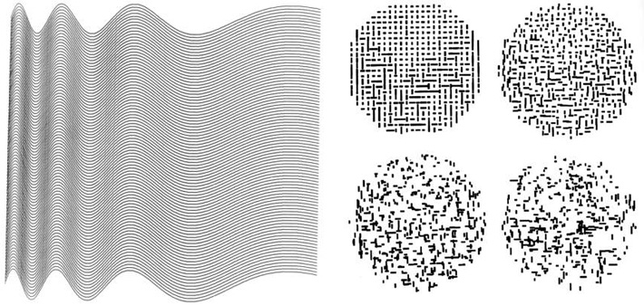Ninety parallel sinusoids with linearly increasing period, 1964 and Composition with Lines (after Mondrian), 1964 by A. Michael Noll
VERA MOLNAR
"The computer helps, but it does not 'do', does not 'design' or 'invent' anything."
"My computer-aided procedure is simply a systematization of the traditional approach. ...In spite of their advantages, computers, no more than other simpler tools, do not guarantee that a work of art of good quality will result, for it is an artist's skill that is the decisive factor" Vera Molnar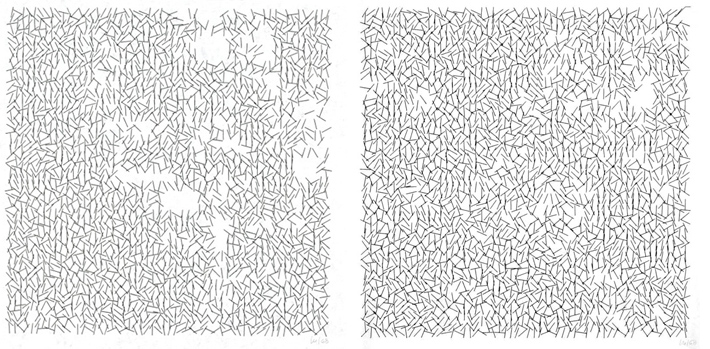
Interruptions Series, 1968-9 by Vera Molnar
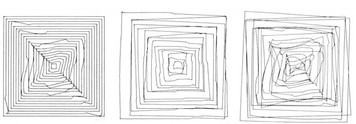Hypertransformations, 1975 by Vera Molnar
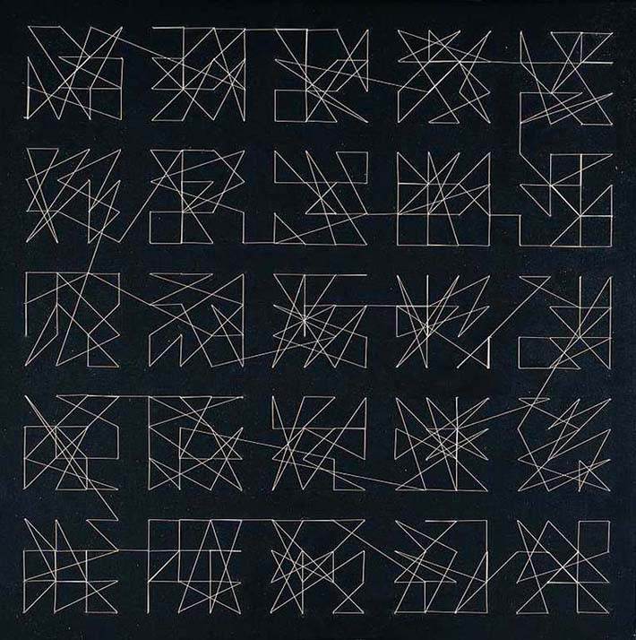Homage to Dürer, 1989 by Vera Molnar
JOHN WHITNEY
John Whitney demonstrates his analog computer
Title sequence to Alred Hitchcock's Vertigo, featuring animation by Whitney. Also... this.
Permutations, 1967
Arabesque, 1975
LILLIAN SCHWARTZ
Lillian Schwartz from Ben Rubin - OCR.
- Link to Schwartz's films here
PROCESSING 2: CONDITIONAL LOGIC + MOVEMENT + VARIABLES
THIS
- What are variables?
- Basic types of data (int, float, boolean).
- Putting background() in setup() vs. draw()
- Manipulating variables.
- Linear movement.
- Rotational movement.
- Looping and bouncing movement.
- Random movement.
- Conditional if/else statements.
EXAMPLES
Example code available here.